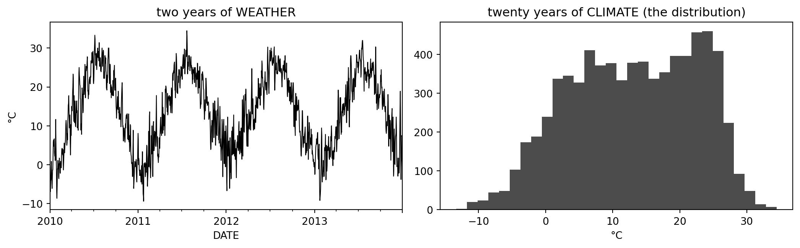
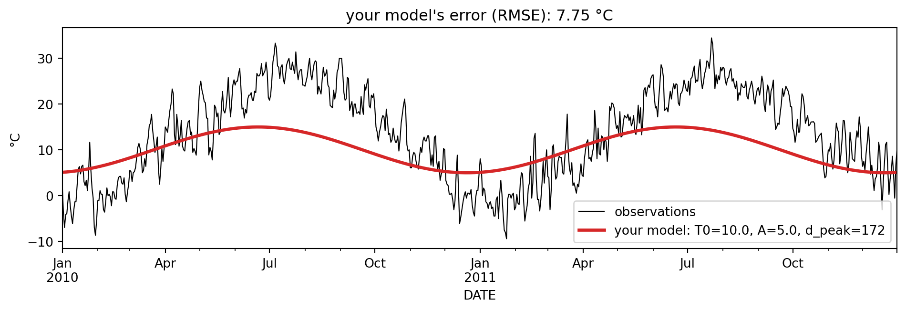
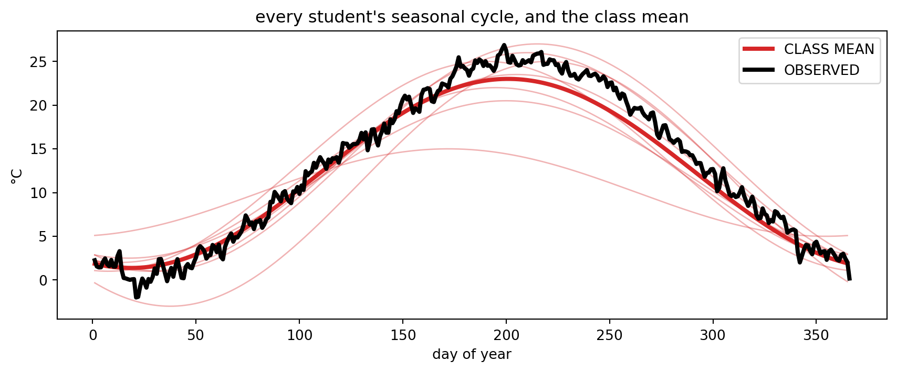

Week 1, in class · Introduction to Climate Modeling
Daily temperature in Central Park, 1995–2014. We’ll use it to answer, concretely: what is climate? and what is a model? — and to build your first climate model (it has two parameters).
import numpy as npimport pandas as pdimport matplotlib.pyplot as pltbase ="https://dhruvbalwada.github.io/intro-climate-modeling-fall2026/labs/data/"# 1. station thermometer (NOAA) + 2. ERA5 reanalysis — same filedf = pd.read_csv(base +"centralpark_obs_era5_1995-2014.csv", index_col=0, parse_dates=True)# 3. a CMIP6 climate model at the same locationcm = pd.read_csv(base +"centralpark_cmip6_MPI-ESM1-2-HR_1995-2014.csv", index_col=0, parse_dates=True)cm.index = cm.index.normalize() # model timestamps sit at 12:00; align them to datesdf["t_cmip6"] = cm["t_cmip6"].reindex(df.index)df.head()
t_obs
t_era5
t_cmip6
DATE
1995-01-01
7.50
5.1
-3.799713
1995-01-02
2.25
2.2
-7.446625
1995-01-03
-2.50
-2.2
-7.653137
1995-01-04
-2.75
-2.1
-5.104645
1995-01-05
-6.10
-6.4
-4.841217
Where this data comes from
Good practice: always know your data’s provenance. All three series cover 1995–2014 (the last 20 years of the CMIP6 historical experiment, so they overlap).
column
source
t_obs
NOAA NCEI GHCN-Daily, station USW00094728 (NY City Central Park). Daily mean taken as (TMAX+TMIN)/2, the standard convention for long station records.
t_era5
ERA5 reanalysis, daily mean 2 m temperature (Copernicus/ECMWF), via the Open-Meteo archive API, nearest grid point to Central Park.
t_cmip6
CMIP6 MPI-ESM1-2-HR, historical, r1i1p1f1, daily tas, from the Pangeo cloud archive; nearest grid cell (40.68 °N, 74.06 °W).
The download script lives with the course materials (fetch_station_data.py) — we pre-extracted these so class doesn’t depend on live cloud access.
Three columns, three very different things: t_obs is a real thermometer, t_era5 is a reanalysis, t_cmip6 is a climate model. We’ll look at the observations first and bring the other two in at the end.
1. Weather vs climate
Plot two years of data. Then plot the histogram of all 20 years.
fig, ax = plt.subplots(1, 2, figsize=(11, 3.5))df["t_obs"]["2010":"2013"].plot(ax=ax[0], lw=0.8, color="k")ax[0].set_ylabel("°C"); ax[0].set_title("two years of WEATHER")ax[1].hist(df["t_obs"].dropna(), bins=30, color="k", alpha=0.7)ax[1].set_xlabel("°C"); ax[1].set_title("twenty years of CLIMATE (the distribution)")plt.tight_layout()print(f"mean = {df['t_obs'].mean():.1f} °C std = {df['t_obs'].std():.1f} °C")print(f"record low = {df['t_obs'].min():.1f} °C record high = {df['t_obs'].max():.1f} °C")
mean = 13.1 °C std = 9.4 °C
record low = -13.3 °C record high = 34.5 °C

Discuss: The mean and the histogram are NYC’s climate (over this chosen 20-year window). What can this distribution tell you that the mean alone can’t? (Hint: which tail do heat waves live in?)
2. Your first climate model — fit it by hand
Most of the wiggle is the seasonal cycle. Let’s model temperature as:
where \(d\) = day of year. Three parameters — and each one means something physical:
\(T_0\) = ______ (what does it mean? what are its units?)
\(A\) = ______ (what does it mean? units?)
\(d_{peak}\) = ______ (the day the cycle peaks — what sets it?)
Your job: pick all three by hand. Run the cell, look at the plot and the error, adjust, repeat. Stop when you can’t do better.
# EDIT THESE THREE NUMBERS, run, look, repeat:T0 =10.0# °CA =5.0# °Cd_peak =172# day of year (172 = June 21, the summer solstice — is that right?)doy = df.index.dayofyeardf["t_model"] = T0 + A * np.cos(2* np.pi * (doy - d_peak) /365)fig, ax = plt.subplots(figsize=(10, 3.5))df["t_obs"]["2010":"2011"].plot(ax=ax, lw=0.8, color="k", label="observations")df["t_model"]["2010":"2011"].plot(ax=ax, lw=2.5, color="tab:red", label=f"your model: T0={T0}, A={A}, d_peak={d_peak}")ax.set_ylabel("°C"); ax.legend()rmse = np.sqrt(((df["t_obs"] - df["t_model"])**2).mean())ax.set_title(f"your model's error (RMSE): {rmse:.2f} °C")plt.tight_layout()

When you’re happy: shout out your \(T_0\), \(A\), \(d_{peak}\) and RMSE — we’ll collect them on the board.
Everyone fit the same data with the same model — and got different numbers. That spread is parameter uncertainty, and you just experienced where it comes from. (A computer can minimize the error exactly — we’ll let it, later — but its answer is just one more point in this cloud, privileged only by its error being lowest.)
Two things to notice:
Your three-parameter model explains most of the variance. What physical fact makes the seasonal cycle so predictable, when next Tuesday’s weather isn’t?
Where did your \(d_{peak}\) end up? The Sun is strongest at the June solstice (day 172) — but that is almost certainly not where you put the peak. Why would the warmest day of the year lag the sunniest one? (Hold that thought — it’s exactly what Lab 0d is about.)
3. Two more “NYCs”: a reanalysis and a climate model
The same location, from ERA5 (a weather model continuously corrected by observations) and from a CMIP6 climate model (free-running — it invents its own weather).
fig, ax = plt.subplots(figsize=(11, 3.5))for c, col, lab in [("t_obs", "k", "station"), ("t_era5", "tab:blue", "ERA5"), ("t_cmip6", "tab:orange", "CMIP6 model")]: df[c]["2000-06":"2010-12"].plot(ax=ax, lw=1.2, color=col, label=lab)ax.set_ylabel("°C"); ax.legend(); ax.set_title("six months, three versions of NYC")plt.tight_layout()doyg = df.index.dayofyeara = df.apply(lambda c: c - c.groupby(doyg).transform("mean")) # each series minus its own seasonal cycleprint("day-to-day correlation with the station (seasonal cycles removed):")print(f" ERA5 : r = {a['t_obs'].corr(a['t_era5']):.2f}")print(f" CMIP6 : r = {a['t_obs'].corr(a['t_cmip6']):.2f}")print(f"\n20-year means: station {df['t_obs'].mean():.1f} °C · ERA5 {df['t_era5'].mean():.1f} °C · CMIP6 {df['t_cmip6'].mean():.1f} °C")
day-to-day correlation with the station (seasonal cycles removed):
ERA5 : r = 0.95
CMIP6 : r = -0.01
20-year means: station 13.1 °C · ERA5 11.5 °C · CMIP6 10.2 °C

Discuss (the big ones):
ERA5 tracks the station day-by-day; the CMIP6 model completely ignores it. Why is that not a failure of the CMIP6 model? What should it get right?
All three 20-year means differ (station warmest, CMIP6 coldest). Give two different kinds of reasons why. (One is about what a grid cell is; one is about the model being imperfect.)
Your 2-parameter model has a lower RMSE at this station than the CMIP6 model. Is yours the better model? For what, and for what not?